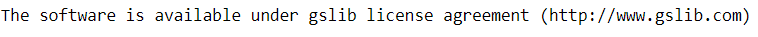
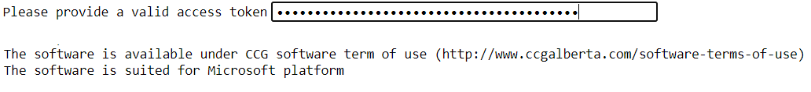

Installation¶
Note that pygeostat requires Python 3.6+. Pygeostat will likely require modification to work with any other version of python. Pygeostat is also dependent on the suite of curated python packages provided with the Anaconda Python distribution. It is recommended to install this prior to pygeostat installation.
Python Installation¶
The Anaconda distribution by Continuum Analytics is recommended. If unfamiliar with Python and virtual environments, then accepting the defaults of registering with the system and installing to the path are recommended.
Pygeostat Installation¶
Pygeostat can be installed from python package index (PyPI) repository.
pip install pygeostat
Additional Software (CCG Members)¶
CCG memebers have the option to install CCG/GSLIB software (executable files) to enable pygeostat scripting features. This can be done using the following function. While GSLIB executable files are avilable through a public repository, for CCG software a vlid access token is required to download executables files from a private repository. The access token is avilable for CCG members at CCG knowledge base website.
-
pygeostat.utility.get_executable(source='gslib', access_token=None, clean=False)¶ Gets a collection of executable files from a protected repository using an access token. Note that in order to use this function, git needs to be installed on the target computer.
Parameters: - source (str) – gslib or CCG as the source of software.
- access_token (str) – An access token to authorize access to the target private repository for CCG software. Access token is available for CCG members and can be found at CCG knowledge base.
- clean (bool) – Option to clean the executable directory prior to upload the files from the target private repository. Note that choosing this option will delete the existing executable files.
Examples
Installing GSLIB executable files
import pygeostat as gs gs.get_executable(source='GSLIB')
Installing CCG software
import pygeostat as gs gs.get_executable(source='CCG', clean=True)
Using the installed software
# Load example data included in pygeostat data_file = gs.ExampleData('cluster') # Initialize the Program object nscore = gs.Program('nscore', getpar=True) # Run normal score transformation parstr = """ Parameters for NSCORE ********************* START OF PARAMETERS: {datafile} - file with data 3 1 2 3 - number of variables and columns 5 - column for weight, 0 if none 0 - column for category, 0 if none 0 - number of records if known, 0 if unknown -1.0e21 1.0e21 - trimming limits 0 -transform using a reference distribution, 1=yes ../histsmth/histsmth.out -file with reference distribution. 1 2 0 - columns for variable, weight, and category 101 -maximum number of quantiles, 0 for all {outfl} -file for output {trnfl} -file for output transformation table """ pars = dict(datafile=data_file.flname, outfl = 'nscore.out', trnfl = 'nscore.trn') nscore.run(parstr=parstr.format(**pars), liveoutput=True)
Create Virtual Environments¶
Python environments can be used to isolate different projects with different dependencies. The following code snippets can be used to setup a python environment using conda package manager.
- Creat the environment
conda env create -n <environment_name> -f environment.yml
- Activate the environment
conda activate <environment_name>
- Install pygeostat on the new environment that is activate
pip install pygeostat
The nexs step is to launch your favorite IDE for python (e.g. Jupyter).
Using R from Python¶
Consider:
- rpy2 - a Python library providing a low-level interface to R from Python - http://rpy.sourceforge.net/
- Matrix - a R library - https://stat.ethz.ch/R-manual/R-devel/library/base/html/matrix.html
To allow interfacing between Python and R, rpy2 is required. Currently, only the utility gs.nearpd() uses rpy2 which also requires the R library “Matrix” to be installed through R. Installing rpy2 can be temperamental. Use the following installation instructions for rpy2:
- Download the rpy2 wheel file (e.g., rpy2-2.6.0-cp34-none-win_amd64) from: http://www.lfd.uci.edu/~gohlke/pythonlibs/#rpy2
- From the command prompt, install the wheel file by using the command
>>> pip install rpy2-2.6.0-cp34-none-win_amd64.whl
- Add the path to the folder containing R.dll to the environment variable PATH (e.g., C:Program FilesRR-3.1.2/bini386)
- Add an environment variable R_HOME pointing to R (e.g., C:Program FilesRR-3.1.2)
- Add an environment variable R_USER that is your windows user name